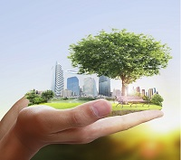
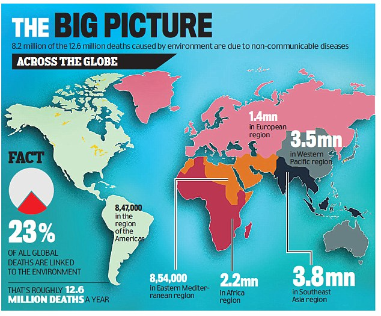
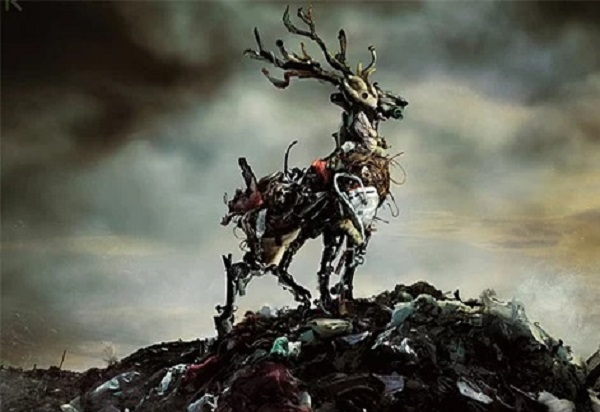
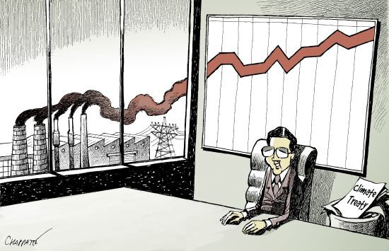

We began with a motive to to create awareness among common people,and came up with an idea to make a community to make the thing happen_ Green-Bloggy
January 2019
Idea Taking Shape
A brief outline was created, the website started taking shape, and we are done with the introductory part of our website.
March 2019
Ready to go
Our amazing team completed the task, much faster than expected. And we are ready for the launch

NOW
Our Expectations
We now need more and more contribution from everyone to carry on this project, and share good thoughts with everyone till we make this world a better place.
This website is more than just a weblog. Here, we raise concern and awareness about serious threats the world is exposed to, each day inching closer to catastrophe, with environment kept at stake.
Together let's be socially selfish and serve our Mother Earth selflessly
Green Vitality in The Air
By Anshika Jain
Pollution! Hearing this word, the sort of impurity, uncleanliness and bad heath comes in our mind. Pollution contributes to the harmful environment which results in adverse effect on living beings. Anything added in the environment that results in producing harmful or poisonous effect on living things is called pollution.
Inhaling poisonous air is as hazardous as smoking. It is not only the humans who are affected from this polluted environment but also the food we eat.
Air is filled with colourless toxic gases. Any use of natural resources at a rate higher than nature’s capacity to restore itself will results in pollution. Other than human activities, there are a few periodic natural cycles that also result in release of dangerous stuff. Globalisation is another major cause of pollution globalisation has become an effective facilitation of environmental degradation. Due to pollution various diseases like asthma, bronchitis, dengue are increasing day by day. And human life is getting degraded with this upcoming technological pollution.
Conclusion:We must shun excessive consumption and avoid careless and deliberate disposal of post – consumption waste resources which could otherwise we recycled and would led to pollution control
Date: January 2019
writer: Anshika Jain
Category: Pollution
Climate change and Environment
By Climate_reality_project
Climate change is not only hitting close to home – it’s knocking on our front door and demanding to come in. But we’re not going to let that happen.
We’re going to make an educated guess here. When we talk about who climate change affects, we’re guessing your first thought isn’t me. Or your friends and family today.
You’re not alone. If you’re like most people, you maybe imagine your grandchildren or even great-grandchildren having to deal with record heatwaves. Or people far away struggling in the face of rising seas.
But the (rather inconvenient) truth is that the climate crisis is already affecting most of us right here and right now. From the second we wake up in the morning, to the minute we doze off at night. And we have to do something about it.
HERE ARE THREE WAYS THAT CLIMATE CHANGE IS ALREADY AFFECTING PEOPLE’S LIVES:
HEALTH
Climate action is just what the doctor ordered. And we mean that quite literally. Medical professionals have increasingly been sounding the alarm about the risks and consequences of continually burning fossil fuels.
Here’s the problem. The same dirty fossil fuel emissions that contribute to the greenhouse effect can lead to respiratory diseases – such as asthma – in children and adults. And they can be quite dangerous. Air pollution kills an estimated 7 million people worldwide every year, according to the World Health Organization.
HOME
There’s really no place like home. But for many living in coastal communities, sea-level rise could lead to an unwanted (and sudden) move.
As our globe warms, glaciers melt and ocean water expands, leading seas to rise about 7 to 8 inches on average since 1900 – about 3 inches of that since 1993. The added volume of water creeping up coastlines slowly swallows land and homes and fuels more flooding inland (to name just a few impacts).
FOOD
No two people in this world are exactly the same. But there’s something that we all do, regardless of our culture, language, or personality. We all eat. So it’s hard to ignore the impacts of climate change on food.
The same CO2 accumulating in our atmosphere thanks to fossil fuels is actually changing the composition of fruits and vegetables that we eat, making them less nutritious. Extra CO2 is speeding up photosynthesis and causing plants to grow with more sugar and less calcium, protein, zinc, and important vitamins.
CONCLUSION:-
Climate change is not only hitting close to home – it’s knocking on the front door and demanding to come in. But we’re not going to let that happen. We know a lot about the climate crisis and we know how to fix it – by switching to cleaner sources of energy and reducing carbon emissions.
Save Yourself
By Krishna Agrawal

All around the world there is a huge noise about SAVE EARTH, SAVE ENVIRONMENT. But wait what are we saying. Can we destroy Earth. I guess no we don’t have the means to do that. Earth has continued to live for a billion of years and survived all the environmental and atmospheric changes taken place. Only what changed is the form of life from bacteria to dinosaurs. and not to humans. I just wonder after few years what the next form of life be. So, wake up we have to save ourselves. So just edit those slogans and shout SAVE YOURSELVES. I hope then more people will give attention to. at least they will take a pain to read it.
We are so focused on our rights that we forget our duties. We constantly raise opinions of having adequate land, property a bungalow with a lawn and what not. But we are so ignorant that we forget if there is no land left then where the house will be made. Humans are credited with being the most intelligent animal on Earth. But still we can’t understand one simple thing that this planet we got it from our fore fathers and we have to lend it to the future generations. To live and use Earth’s resources is not our birth right but our birth-duty to use it judiciously.
I love to read stories and more than that to listen to it. So, from my elders when I hear about their childhood experiences, I become awestruck. Last night only I was having a conversation and I got to know that earlier when they became ill, they were given apples, almonds, pomegranate and they use to become fit and fine. That is why I guess the famous saying came into place that an apple a day keeps the doctor away. but now people when fell ill they compulsorily need antibiotics to get well again. Congratulations this is the progress we made in nearly 50 years.
It is so ironical that one of the intelligent species is so confused that first they will invent the plastics. Does its advertisement. Gets inspired by it and Use it in everything possible. then after few years few people realize that its bad and then debates and discussions will be there. After that thankfully comes to a conclusion that yes plastics are bad. And then again does advertisement and say don’t use it. Male no plastic use and plastic ban policies. The same person who uses plastics in his/her house will say loudly while going to jog that they have made this place a dump yard.
Our country is fortunate that we pay respect to animals also. But the request is that we should change our mindset and stop being hypocrite. We want to save animals, cows etc. so first stop causing pollution. Many animals die just because they don’t know that plastics should not be consumed.
I totally agree that development is necessary but development should be sustainable. but this is a long way. We know what is sustainable development and, in some extent, we know how to do it. But the problem is short sightedness, immediate materialistic pleasures which stops one from thinking at a wide horizon for the whole world. Not just politics, money, power, fame.
The growing economic disparities, crime rates, illiteracy, unemployment are the causes which are engulfing the youth of the world and thus in turn avoiding the environmental issues. The whole world including you and I will be responsible for the deteriorating state of earth and decreasing life of humans on Earth. Then I guess we will realize that we can’t eat money.
We have recently witnessed the resignation of Shah Faesal from resigning one of the prestigious posts to address issues which they give importance to. so, I won’t ask for resignation but as a student, young generation I would like to request that we should come together, stay united, in real sense be human, raise our love for our Mother Earth and contribute to save our existence. Let us all focus on SMART EARTH. All the political leaders, persons of great importance it will prove to be very beneficiary if you leave your campaigning and manifesto and for once contribute to save our environment.
The people who will raise concerns for this issue may not get power, money, fame right now but history won’t forget them. Till the last breath of human species, the person will be remembered for their effort to increase the life expectancy of humans.
Just unite so that we may live a little longer, a little healthier, a little happier…
Date: January 2019
writer: Krishna Agrawal
Category: Concern
Marine Pollution
By helpsavenature
Oceans constitute around 70% of the surface of earth and are an important part of the ecological cycle. Oceans are vast water resources and are home to millions of plants and organisms. Unabated human-activity has resulted in degradation of marine life and there are several species of organisms that are on the verge of extinction. The harmful and toxic substances that come out of industries are dumped into oceans, putting plants and animals to grave risks.
Impact of Ocean Pollution on Marine Life:-
Like humans, marine organisms also need oxygen for their survival. Oxygen is present in the dissolved form in the oceans and the toxic substances have an ability to absorb this dissolved oxygen, thus resulting in decrease in the oxygen levels inside the oceans.
The contamination of ocean water with poisonous chemicals and toxins has already killed hundreds of thousands of marine organisms and many more are under the threat of extinction. The chemicals also have far-reaching effects as these interfere with the genetic make-up of organisms and cause various physiological changes. Because of this continuous exposure to chemicals and toxins, around two-thirds of marine life has been declared as 'threatened species'.
Plastic which is dumped in oceans on a large-scale causes a lot of deaths as it leads to suffocation. Many turtles die because they are not able to distinguish between jellyfish and plastic and end up consuming it which leads to a slow painful death due to choking.
Nature has shown us time and again that any sort of interference with its cycle can have disastrous consequences on the life on this planet.
The efforts that have been taken to eradicate air and land pollution have proven beneficial, and it is important that similar measures are employed to reduce the levels of ocean pollution. The effects of ocean pollution on marine life are far-reaching and humans should not consider themselves immune to the impact that it will have on them.
Wildlife in Threat
Anonymous

Many people consider that the protection of endangered species can be explained by quite obvious reasons, but some people still question why it is important to save animals from extinction. Therefore, the following essay on extinction of animals will make an attempt to clarify the question of animal protection. The current extinction of animals essay is aimed at providing well-grounded arguments as for why animals should be saved from dying out. The main question to be answered in the following animal extinction essay is whether there exist any environmental benefits in relation to species preservation. The paper will provide arguments in favor and against animal protection in an attempt to explain the necessity to protect endangered species and make it clear that animal extinction is not beneficial for both the environment and the humanity. Overall, the world community should take measures in order to improve the situation and prevent drastic consequences for the humanity.
What does the word “endangered” mean? Before we start the debate, there should be provided some background. It is common knowledge that species are considered endangered if there is any risk of extinction, which can be caused by a number of factors including climatic changes and influence of humans. Therefore, in order to clarify whether certain species are endangered or not, there is a need to observe the trends of the growth and decline of these very species and the reasons of why they are at a risk of dying out.
As for the arguments in favor of animal protection, one of the most notable arguments refers to a high level of biodiversity. The word “biodiversity” means the diversity of biological species. If the biodiversity is in order, it indicates that the environment does not need any interventions. However, the destroyed balance in the diversity of biological species means that some animals are endangered and therefore need to be preserved. All this means that if the cornerstone species are removed from the ecosystem, whether these are plants or predators, this can entirely destroy the whole environmental system. Furthermore, endangered species are also an indicator of the state of human health. For instance, after certain species like the Bald Eagle have become extinct, the environmental dangers associated with their extinction have resulted in harmful effects on the human health. This means that proper measures should be taken in order to prevent the potential damage to human welfare. When something goes wrong in the ecosystem, it also affects the humans in this way or another, which means that endangered species give an important warning to the humanity.
Another aspect related to animal extinction is that many species that have become extinct are considered a kind of cultural symbol. An example of such symbols is elephant ivory that has caused a real epidemic in terms of poaching. The same refers to tiger pelts that have long been considered a valuable symbol across the world. This argument leads to an assumption that the preservation of endangered species is in many ways similar to the restoration of destroyed cathedrals or other iconic buildings that have a symbolic meaning for the humanity.
One more important issue is the scientific value of various endangered species. It is a fact that many species are on the verge of extinction but at the same time prove to be useful from the scientific perspective. A number of plants that are included in the lists of endangered species are valuable for the development of such spheres as health care, namely cancer investigations, and agriculture when it comes to the development of organic insecticides. If these species are destroyed before the researchers have a chance to investigate their properties to full extent, it will definitely have a number of negative effects for the whole humanity. Specifically, cancer research is of great importance, because the cure for this disease has not yet been found, and maybe some of the species of plants being on the verge of extinction would be valuable for solving the ever-increasing problem of cancer.
As for the arguments against animal preservation, it needs to be noted that according to some people, researchers spend too much financial resources with little effect. The efforts directed towards animal conservation often cause harm to the local industries, including farming and mining. However, a counter argument would be that the destruction of industries in its turn causes harm to the environment, as former workers of farms and other industries turn to using illegal means of earning money, including poaching. Some people claim that the cost of animal protection is not significant. Ecotourism has become a successful attraction for people. The adventures that one can experience in Safari definitely bring much money to the world economy. Due to ecotourism, people can see some rare and exotic species that they would never be able to see anywhere else. Various species introduced in national parks across the world attract numerous tourists and consequently, bring much money to their owners at the same time contributing to the research on endangered species. This proves that animal protection is nevertheless important despite numerous contradictions that continue to arise across the global community.
Among other counterarguments against natural conservation is the fact that the humanity might well do better without certain species. Many people seriously doubt that wolves and other dangerous species should be preserved. Another issue of concern is that many people across the world are dying of various incurable diseases and starvation. Then why do the governments of the developed countries spend huge amounts of money on animal conservation instead of helping poor nations? Some people simply do not see the point in animal protection as this aspect does not seem to be of great importance for them.
Despite all the arguments against animal protection, it is still important to preserve the natural surroundings as most researches prove that the balanced ecosystem plays an important role in ensuring the welfare of the humanity. Therefore, endangered species should be protected at all costs.
Environment Vs Development
Parul Gupta

Ecology and Economics are closely related issues. Being a student of Economics, I’ve studied that inclusive development is not possible without adequate emphasis on environmental protection. Development and environment need to be seen as complementary, not antagonistic terms. After all, if there is no Earth left, where will development take place?!
Today, when the world is facing the harmful consequences of global warming and depletion of resources, environment conservation has become a topic of global significance, not just an issue with local importance. The matter is of paramount relevance in a developing economy like ours, as environment degradation drastically offsets improvements achieved by economic prosperity, apart from having serious implications for distributive justice.
In my view, although the issue has gained more importance in today’s grave scenario, environment conservation is still a neglected sector, with excessive emphasis on ‘growth’ in terms of numbers, without focusing on ‘development’ in terms of quality. Improper implementation of policies, coupled with indifferent attitudes of authorities has accentuated the ineffectiveness of environment strategy in India.
This has led to a host of problems like mounting pressures on depleting resources and poor waste management resulting in deplorable conditions and health hazards. Thus it is imperative to frame environment policy with holistic considerations of health, sanitation and overall development of the populace.
More awareness & sensitivity towards the environment is the key to environmental conservation. A possible measure for this would be to inculcate awareness among students. Providing infrastructure for waste management, water harvesting and paper recycling in schools and colleges can go a long way in sowing the seeds of environment consciousness in young minds.
Concurrently, it is also crucial for the government and policy makers to ‘walk the talk’ by adopting water harvesting & waste management and using efficient energy sources in government offices, in addition to having laws that reinforce other initiatives; for example, to make a ‘Say no to crackers’ drive by students successful, the government can play an important role to reduce consumption of crackers, possibly by higher taxes.
Thus, positive encouragement for judicious use (concessional rates of solar equipment and efficient appliances) and negative incentives for misuse of resources (higher taxes for inefficient cars and high energy consuming buildings) should be provided.
Apart from this, at the micro level, each one of us can contribute towards the betterment of the environment, simply by living by the principle of “REDUCE, REUSE and RECYCLE”. Really, it does not take much time or effort to be judicious about the usage of precious resources like electricity, water and paper. Small steps do have a profound impact-and the sooner we realize this, the better it will be for our Earth and our future generations.